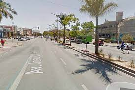
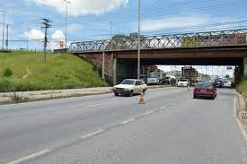
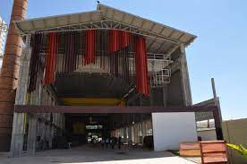
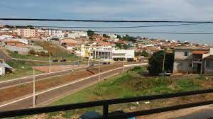

Melhorias na João César
A prefeitura realizou importantes melhorias na avenida João César de Oliveira, que recebeu novas alças, faixa exclusiva para ônibus e revitalização da sinalização e dos canteiros, dentre outras intervenções.
Nova alça no viaduto Beatriz
Atendendo a uma demanda da comunidade do Bela Vista, a prefeitura fez a reconstrução da alça que dá acesso ao bairro, no viaduto Beatriz, revitalizando todo o local, inclusive com drenagem, passeio, meio-fio e sinalização
Centro de Mémoria do Trabalhador
Com obras já em fase de conclusão, a região ganhará um museu de memória do trabalhador, próximo à Trincheira do Itaú, com áreas culturais, biblioteca, auditório, café e espaço para exposições.
Revitalização da avenida das nascentes
A prefeitura atendeu solicitações de toda a comunidade da região e revitalizou a avenida das Nascentes, no Parque São João, eliminando, inclusive, o ponto de “bota-fora” que havia no local.